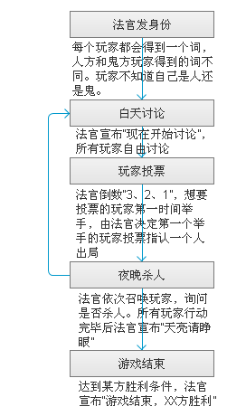

游戏分为两大阵营：水民和幽灵。
每个玩家都会得到一个词，水民和幽灵玩家得到的词不同。玩家不知道自己是水民还是幽灵。
幽灵：
幽灵：游戏中的少数，努力存活至总数不少于人即可取胜。
水民：
水民：游戏中的大多数，通过讨论和投票找出水民。
2、过程
游戏按白天和夜晚交替进行，白天又分为讨论和投票两个阶段。
讨论阶段：所有玩家自由发言。
投票阶段：法官倒数“3、2、1”，想要投票的玩家第一时间举手，由法官决定第一个举手的玩家，由该玩家投票指认一个人。如果被指认的是水民，则被投者出局；如果被指认的是水民，则投票者出局。
夜晚：法官依次召唤玩家，询问是否杀人并进行统计。如果被杀的是水民，则被杀者出局；如果被杀的是幽灵，则杀人者出局。

3、胜负
幽灵方：幽灵的人数不少于水民，幽灵胜利。
水民方：所有幽灵出局，水民胜利。
4、人数配置
游戏可由4-14人同时进行。
| 4-5人 | 1鬼 |
| 6-8人 | 2鬼 |
| 9-11人 | 3鬼 |
| 12-14人 | 4鬼 |